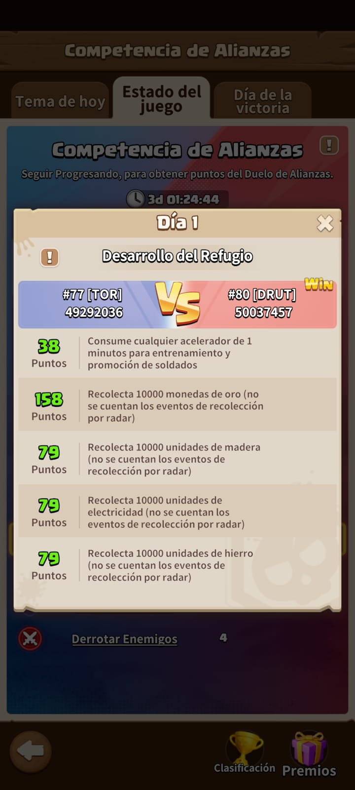
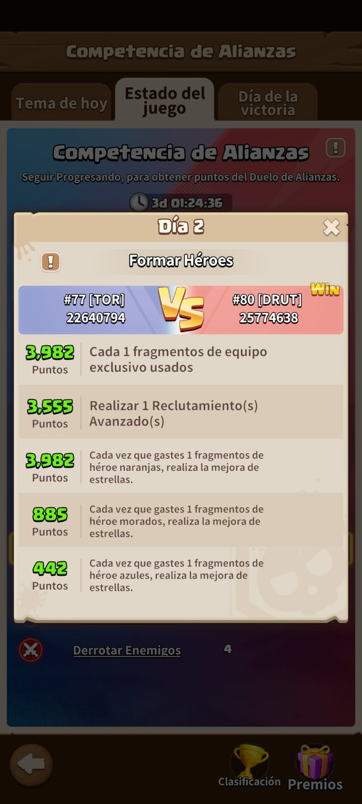
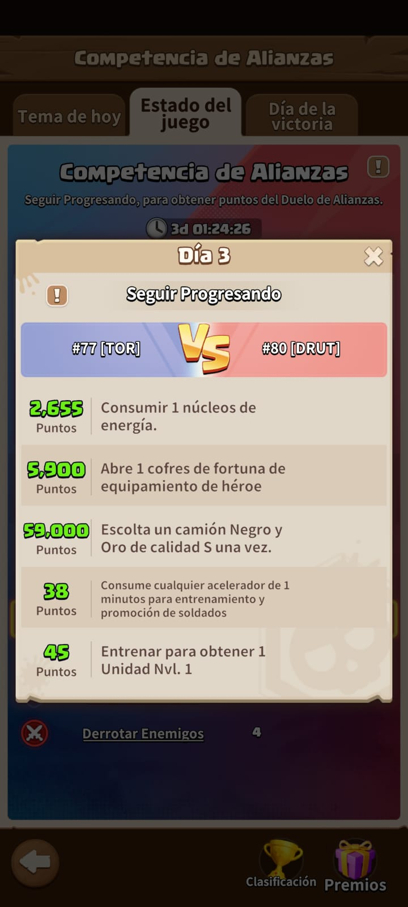
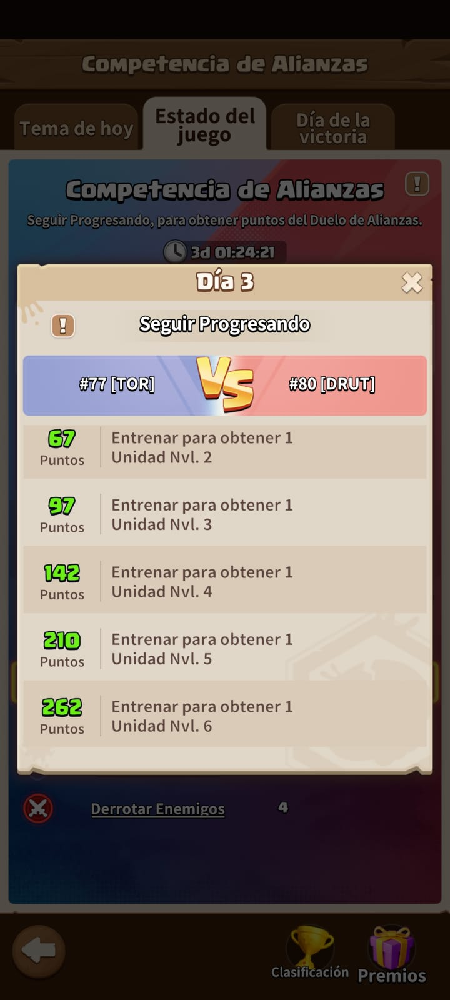
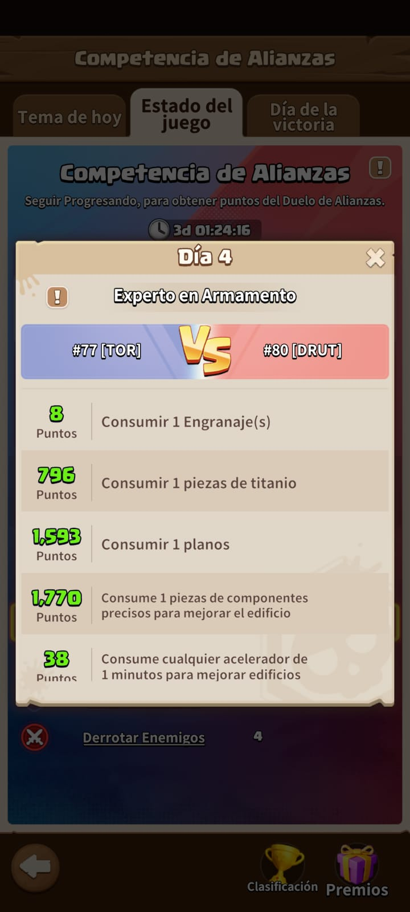
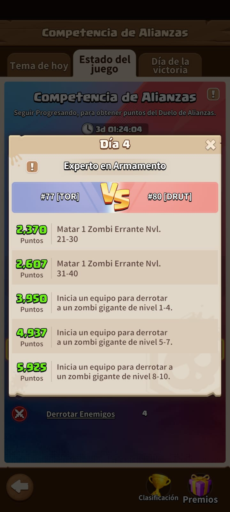
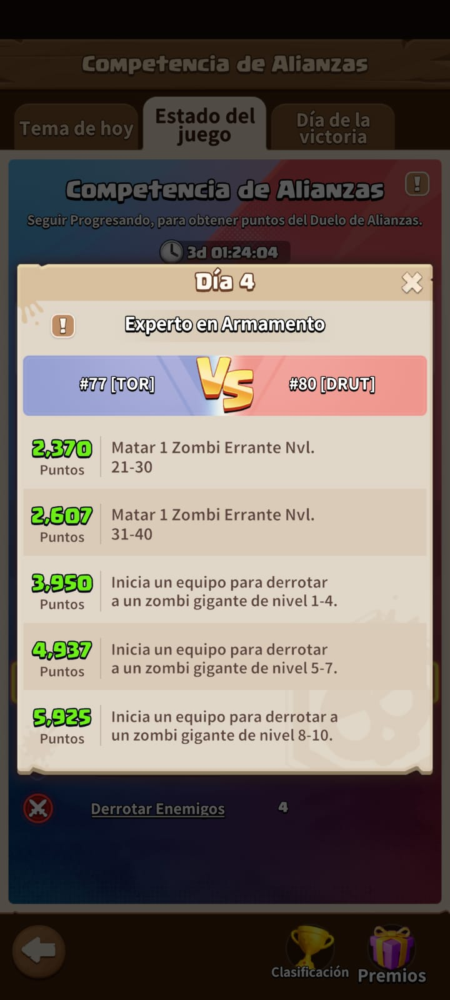
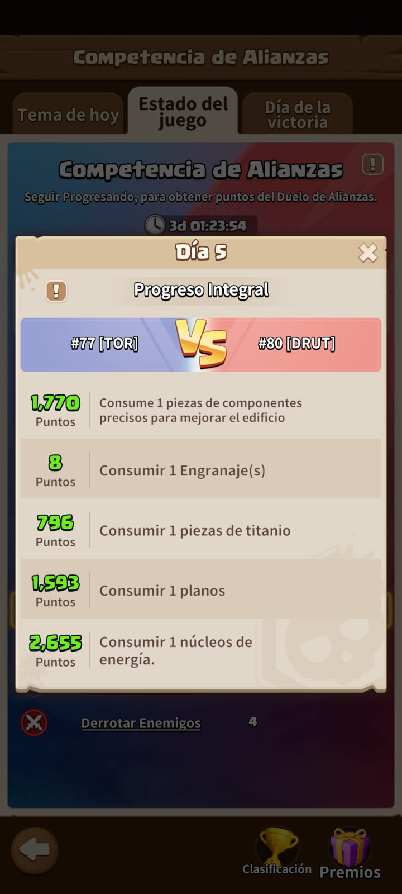
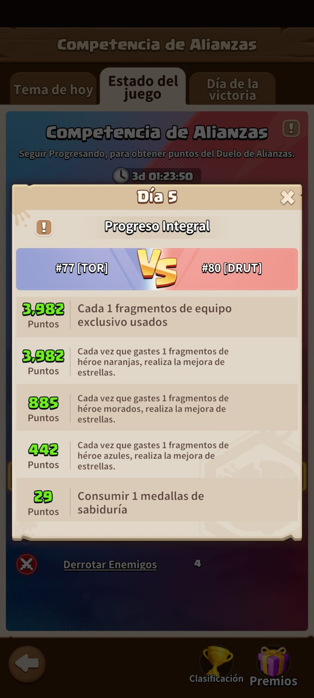
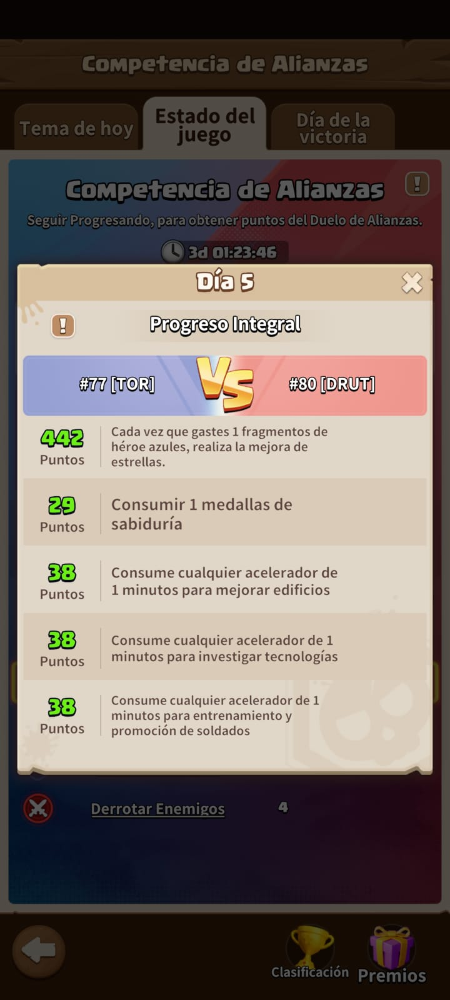

-
Versus
El Versus se divide en un total de 6 días a la semana, de los cuales cada día tiene sus misiones diarias para hacer puntos
Día 1: Construcción y Tecnología
Este día es donde tienen que mejorar edificios y tecnología. Tratar de no poner a construir cosas que no puedan terminar con aceleradores el mismo día. Así como también pueden poner a construir cosas grandes días posteriores calculando llegar a este día para terminarlo.
Misiones Diarias:
Día 2: Reclutamiento
Aquí es donde van a usar todas las tarjetas de reclutamiento. No se usan fuera de ese día y ni hablar de los fragmentos naranjas, violetas y azules.
Día 3: Equipamiento y Entrenamiento
Acá se consumen núcleos de energía (para los equipos), se abren los cofres de suerte de equipamientos, se envían 4 camiones nivel S y se entrenan los soldados. Este es el día donde van a usar todos los aceleradores de soldados que tengan y van a entrenar todo lo que puedan (también sirve promover). Yo aprovecho este día para promover a mis muchachos.
 Día 4: Caza de Gigantes
Este día está concentrado en matar gigantes constantemente. Acá se usan todas las energías que tengan y tratan de hacer gigantes lo más alto que puedan para más puntos.
 

Día 5: Sabiduría y Mejoras
Acá fundamental. Todas las medallas de sabiduría se deben gastar. Todas. También se pueden usar devuelta fragmentos si llegaron a juntar y además mejoras del auto.
  Día 6: Combate
Matar soldados enemigos para acumular puntos.